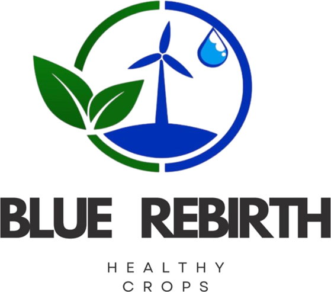

Bella Vista, La Cumbre
Mide el pH del agua de tus plataneras
Escribe lo que marcó tu sensor y te decimos si el agua está bien para regar y qué abono revisar.

El proyecto
Qué es Blue Rebhirt
Una página para productores de plátano que ayuda a cuidar el agua de riego y a usar bien el abono.
En tres pasos
Cómo funciona
- Mide el agua con tu sensor.
- Escribe los datos en la página.
- Recibe qué hacer con tu cultivo.